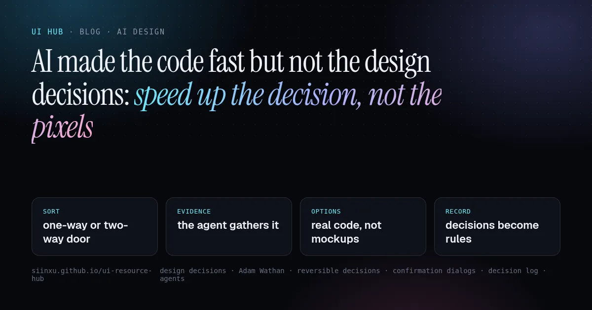
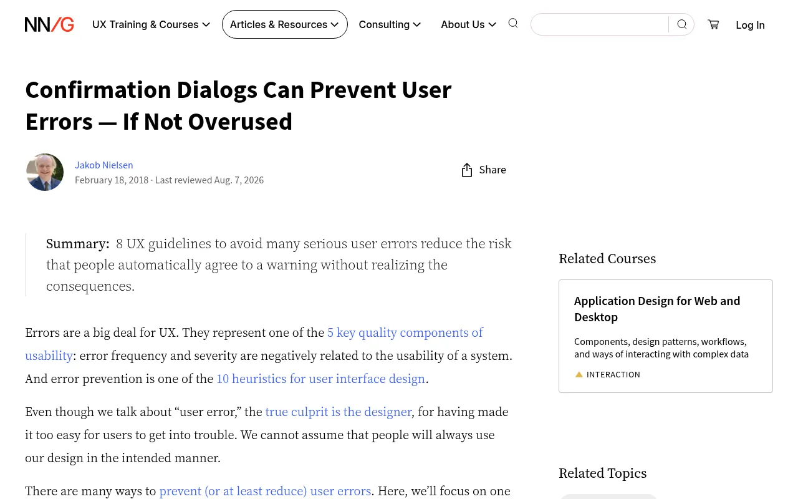
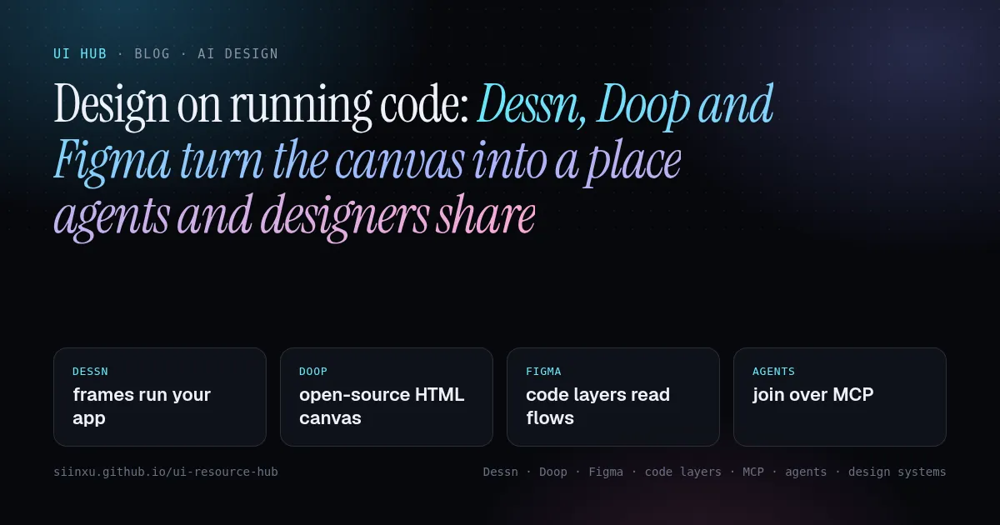
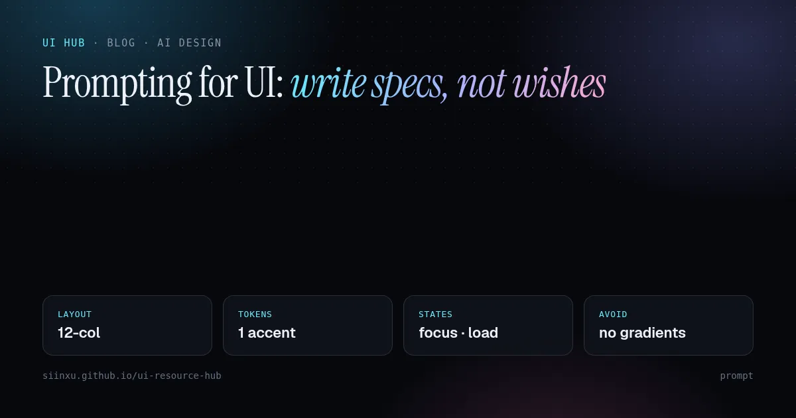

AI made the code fast but not the design decisions: speed up the decision, not the pixelsAIでコードは速くなったが、デザインの判断は速くならない：速くすべきはピクセルではなく判断AI로 코드는 빨라졌지만 디자인 결정은 그대로다: 픽셀이 아니라 결정을 빠르게 하라AI mempercepat kod tetapi bukan keputusan reka bentuk: percepatkan keputusan, bukan pikselAI làm code nhanh hơn nhưng quyết định thiết kế thì không: hãy tăng tốc quyết định, không phải pixelL’IA a accéléré le code, pas les décisions de design : accélérez la décision, pas les pixelsLa IA aceleró el código, no las decisiones de diseño: acelera la decisión, no los píxelesKI hat den Code beschleunigt, nicht die Designentscheidungen: Beschleunigen Sie die Entscheidung, nicht die Pixel
On 26 November Tailwind CSS creator Adam Wathan wrote that he still spends as long on every design decision as he did in 2021, and the post drew about 2,000 likes and 360 replies in two days. His examples were not pixel problems: what to show, dialog or page, save instantly or confirm, how to mark unsaved batch edits. AI cannot make those calls for you, but it can shorten the three slow parts of every decision: gathering evidence, making the options concrete and remembering what was decided. How to sort decisions by how hard they are to undo, his four questions worked through, a checklist and a prompt.11月26日、Tailwind CSSの作者Adam Wathanは、デザインの判断一つひとつにかかる時間が2021年と変わらないと投稿し、2日間で約2,000のいいねと360件の返信を集めた。彼の例はピクセルの問題ではない。ここに何を表示するか、ダイアログか専用ページか、即時保存か確認を挟むか、一括編集の未保存の変更をどう示すか。AIが代わりに決めることはできないが、判断の遅い三つの部分、つまり根拠集め、選択肢の具体化、決めたことの記録は短くできる。取り消しやすさで判断を分ける方法、彼の四つの問いの検討、チェックリストとプロンプト付き。11월 26일 Tailwind CSS를 만든 Adam Wathan은 디자인 결정 하나하나에 쓰는 시간이 2021년과 똑같다고 썼고, 이 글은 이틀 만에 약 2,000개의 좋아요와 360개의 답글을 받았다. 그가 든 예시는 픽셀 문제가 아니다. 여기에 무엇을 보여 줄지, 다이얼로그인지 별도 페이지인지, 바로 저장할지 확인 단계를 둘지, 일괄 편집에서 저장 안 된 변경을 어떻게 표시할지. AI가 대신 결정해 줄 수는 없지만, 모든 결정에서 느린 세 부분인 근거 수집, 선택지의 구체화, 결정 내용의 기록은 줄여 준다. 되돌리기 쉬운 정도로 결정을 나누는 법, 그의 네 가지 질문 풀이, 체크리스트와 프롬프트 포함.Pada 26 November pencipta Tailwind CSS, Adam Wathan, menulis bahawa dia masih menghabiskan masa yang sama untuk setiap keputusan reka bentuk seperti pada 2021, dan hantaran itu meraih kira-kira 2,000 suka dan 360 balasan dalam dua hari. Contohnya bukan masalah piksel: apa yang patut dipaparkan, dialog atau halaman, simpan serta-merta atau minta pengesahan, cara menandakan suntingan pukal yang belum disimpan. AI tidak boleh membuat keputusan itu untuk anda, tetapi ia boleh memendekkan tiga bahagian yang perlahan dalam setiap keputusan: mengumpul bukti, menjadikan pilihan konkrit dan mengingati apa yang telah diputuskan. Cara menyusun keputusan mengikut betapa sukar ia dibatalkan, empat soalannya dihuraikan, senarai semak dan prompt.Ngày 26/11, Adam Wathan, tác giả Tailwind CSS, viết rằng anh vẫn mất chừng ấy thời gian cho mỗi quyết định thiết kế như năm 2021, và bài đăng nhận khoảng 2.000 lượt thích cùng 360 phản hồi trong hai ngày. Các ví dụ của anh không phải vấn đề pixel: nên hiển thị gì, dùng hộp thoại hay trang riêng, lưu ngay hay hỏi xác nhận, đánh dấu các chỉnh sửa hàng loạt chưa lưu thế nào. AI không thể quyết thay bạn, nhưng có thể rút ngắn ba phần chậm nhất của mọi quyết định: thu thập bằng chứng, biến các phương án thành thứ cụ thể và ghi nhớ điều đã quyết. Cách phân loại quyết định theo mức khó hoàn tác, bốn câu hỏi của anh được phân tích, kèm checklist và prompt.Le 26 novembre, Adam Wathan, créateur de Tailwind CSS, a écrit qu’il passe toujours autant de temps sur chaque décision de design qu’en 2021, et son message a reçu environ 2 000 j’aime et 360 réponses en deux jours. Ses exemples ne sont pas des problèmes de pixels : quoi afficher, boîte de dialogue ou page, enregistrer tout de suite ou confirmer, comment signaler des modifications groupées non enregistrées. L’IA ne peut pas trancher à votre place, mais elle peut raccourcir les trois étapes lentes de toute décision : réunir des éléments, rendre les options concrètes et garder la trace de ce qui a été décidé. Comment classer les décisions selon leur réversibilité, ses quatre questions passées en revue, une checklist et un prompt.El 26 de noviembre Adam Wathan, creador de Tailwind CSS, escribió que sigue dedicando a cada decisión de diseño el mismo tiempo que en 2021, y la publicación sumó unos 2.000 me gusta y 360 respuestas en dos días. Sus ejemplos no son problemas de píxeles: qué mostrar, diálogo o página, guardar al instante o pedir confirmación, cómo marcar ediciones en lote sin guardar. La IA no puede decidir por ti, pero sí acortar las tres partes lentas de cualquier decisión: reunir evidencia, concretar las opciones y recordar lo decidido. Cómo clasificar las decisiones según lo difícil que es deshacerlas, sus cuatro preguntas resueltas, una checklist y un prompt.Am 26. November schrieb Tailwind-CSS-Erfinder Adam Wathan, dass er für jede Designentscheidung noch genauso lange braucht wie 2021; der Beitrag bekam in zwei Tagen rund 2.000 Likes und 360 Antworten. Seine Beispiele sind keine Pixelprobleme: was hier angezeigt wird, Dialog oder eigene Seite, sofort speichern oder bestätigen, wie ungespeicherte Sammeländerungen markiert werden. KI kann diese Entscheidungen nicht für Sie treffen, aber sie kann die drei langsamen Teile jeder Entscheidung verkürzen: Belege sammeln, Optionen greifbar machen und festhalten, was entschieden wurde. Wie Sie Entscheidungen danach sortieren, wie schwer sie rückgängig zu machen sind, seine vier Fragen durchgearbeitet, eine Checkliste und ein Prompt.

本文は英語で表示しています。
본문은 영어로 표시됩니다.
Kandungan dipaparkan dalam bahasa Inggeris.
Nội dung hiển thị bằng tiếng Anh.
Le corps de l’article est en anglais.
El cuerpo del artículo está en inglés.
Der Beitragstext ist auf Englisch.
On 26 November Adam Wathan, who created Tailwind CSS, posted that he still had not found a way to use AI to meaningfully speed up design work, and that he spends as long on every decision as he did in 2021. By 28 November the post had about 2,000 likes, 360 replies and more than 229,000 views, which says the feeling is widely shared. A day later he listed the kind of decisions he meant: what information would be useful to show here; should this be a dialog or its own page; should a button save instantly or ask for confirmation; and, for batch edits, how to mark what has changed but is not yet saved.

The replies split along a useful line. Emil Kowalski, who builds and teaches interface craft, answered that AI works best as support on details such as shadows, motion values and typography, and that handing the bigger decisions to an agent seems both hard and less healthy than leaving them to people. Wathan agreed, and added the part that stings: because everything else now moves so fast, time spent thinking about design starts to feel like time you are not allowed to spend. Alex Barashkov, from the other side, argued that the frustration usually comes from how designers use AI: one thread at a time, all-or-nothing expectations, no design system the agent can read, problems scoped too small, and no plan for letting agents work overnight while you review in the morning.
What the thread is really about
Look at the four examples again. None of them is about how a screen looks. Each one is a judgement about people, data and risk: what this user is trying to do at this moment, how much context they need on screen, what happens if they make a mistake. Models are fast at producing an answer to “make a settings dialog”. They are not in a position to know whether your users edit one record a week or two hundred a day. So the generation step got much faster, and the decision step did not, which is exactly what Wathan describes.
Our take is that both sides of the thread are right, and that the fix is to stop timing the wrong thing. A design decision has three slow parts that are not the decision itself, and AI is good at all three:
- Evidence. Reading support tickets, analytics events, the data model, the design system docs and how comparable products handle the same flow. An agent can gather and summarise this in minutes; you read the summary, not the raw pile.
- Concrete options. Arguing about “dialog or page” in the abstract is slow. Two working versions, built in your real app with real data and real text lengths, usually settle it in minutes. This is where cheap code changes the economics of design most.
- Memory. Most teams re-decide the same questions every few months because the answer lived in a meeting. A short decision record in the repository, which the agent reads before building, turns one decision into a rule that applies everywhere.
Sort decisions by how hard they are to undo
The other way to get faster is to spend less time on decisions that do not deserve it. Jeff Bezos’s shareholder letters describe this well: most decisions are “two-way doors” that can be reversed and should be made quickly with about 70% of the information you wish you had, while a few are “one-way doors” that deserve slow, careful deliberation. The mistake is running every decision through the heavy process. Lovable shipped the same idea into its agent on 19 November: when it asks you a question it now keeps building whatever does not depend on the answer, picks an option for the rest and reworks it if you choose differently, but it waits for you before a step that is hard to undo, such as deleting data.
In interface work, most choices are two-way doors once the UI is code: dialog versus page, the order of fields, which columns a table shows, the wording of an empty state. Pick a sensible default, ship it, watch what happens and change it. The one-way doors are the ones where users or their data get hurt: destructive actions, anything involving money or permissions, emails and notifications that go out to people, migrations, and public URLs. Spend your slow, human thinking there.
Wathan’s four questions, worked through
- What information is useful to show here? Ask the agent for every field the data model has, what users ask about in support tickets and which fields are used in search or filters. Then you decide one thing: what is the user trying to do on this screen? Show what serves that task, put the rest one click away.
- Dialog or its own page? Nielsen Norman Group’s guidance is a good default: modal dialogs interrupt, so keep them for short, focused input that is needed to continue, and avoid them for complex decisions that need information the dialog hides. Have the agent build both with your longest real content, and the answer is usually obvious once you see a form scroll inside a modal.
- Save instantly, or confirm first? Decide by reversibility. If a change can be undone, save it instantly and offer undo. If it cannot, confirm, and say exactly what will happen; NN/g warns that confirmations on routine actions train people to click through them. For long multi-step submissions, a review step like the GOV.UK Design System’s check answers pattern gives people a second chance to catch errors.
- How do we mark unsaved batch edits? This one is a craft question, which is where AI helps most. Ask for three markers side by side (a dot on the changed row, a tinted cell with the old value on hover, a sticky bar counting unsaved changes with Save and Discard), check that none of them relies on colour alone, then pick.
Plan for the slow part
Barashkov’s scheduling tip is the most practical idea in the thread. Spend the last half hour of the day turning open design questions into agent tasks: gather the evidence, build the two variants, list the edge cases. In the morning, review the results in one sitting and make the calls. The thinking time does not disappear, but it stops being spent on setup and on arguing about options that nobody has seen. And keep Kowalski’s point in mind: the goal is not to delegate taste, it is to give your taste better material to work with.
Checklist: speeding up a design decision
- Did you write the decision as a question with the user’s task in it, not as a screen to produce?
- Is it a one-way door (data loss, money, permissions, messages to users, public URLs) or a two-way door?
- For two-way doors: did you pick a default with the evidence you have and move on?
- Did an agent gather the evidence (tickets, analytics, data model, design system, comparable flows) before you started thinking?
- Did you compare at least two working variants in the real app with real data, not mockups?
- Did you write the criteria before looking at the variants, so the prettiest one does not win by default?
- Do destructive or irreversible actions say exactly what will happen, and do reversible ones offer undo instead of a dialog?
- Is the decision recorded in the repository (one line on what, one on why) where the agent reads it next time?
# Paste into a coding agent, with the design question filled in
Design question: [e.g. edit a customer’s address in a dialog or on its own page?]
Do not decide for me. Prepare the decision:
1. Evidence: summarise what the data model, support tickets, analytics events
and our design system docs say about this flow. Quote sources, max 10 bullets.
2. Classify: is this reversible (two-way door) or not? List what could
go wrong for users or their data in each option.
3. Options: build two working variants behind a flag in the real app, using
our components, real data and the longest real text. No mockups.
4. Criteria: propose 3–5 criteria from the evidence before showing the variants.
5. Record: draft a decision entry for docs/decisions.md with a blank for
the choice and one line of rationale. I will fill in the choice.UI Hub related reading: making parallel design directions comparable, taste and skills for agents, approval UI for agents, and putting the rules of a design agent in code.
On 26 November Adam Wathan, who created Tailwind CSS, posted that he still had not found a way to use AI to meaningfully speed up design work, and that he spends as long on every decision as he did in 2021. By 28 November the post had about 2,000 likes, 360 replies and more than 229,000 views, which says the feeling is widely shared. A day later he listed the kind of decisions he meant: what information would be useful to show here; should this be a dialog or its own page; should a button save instantly or ask for confirmation; and, for batch edits, how to mark what has changed but is not yet saved.
The replies split along a useful line. Emil Kowalski, who builds and teaches interface craft, answered that AI works best as support on details such as shadows, motion values and typography, and that handing the bigger decisions to an agent seems both hard and less healthy than leaving them to people. Wathan agreed, and added the part that stings: because everything else now moves so fast, time spent thinking about design starts to feel like time you are not allowed to spend. Alex Barashkov, from the other side, argued that the frustration usually comes from how designers use AI: one thread at a time, all-or-nothing expectations, no design system the agent can read, problems scoped too small, and no plan for letting agents work overnight while you review in the morning.
What the thread is really about
Look at the four examples again. None of them is about how a screen looks. Each one is a judgement about people, data and risk: what this user is trying to do at this moment, how much context they need on screen, what happens if they make a mistake. Models are fast at producing an answer to “make a settings dialog”. They are not in a position to know whether your users edit one record a week or two hundred a day. So the generation step got much faster, and the decision step did not, which is exactly what Wathan describes.
Our take is that both sides of the thread are right, and that the fix is to stop timing the wrong thing. A design decision has three slow parts that are not the decision itself, and AI is good at all three:
- Evidence. Reading support tickets, analytics events, the data model, the design system docs and how comparable products handle the same flow. An agent can gather and summarise this in minutes; you read the summary, not the raw pile.
- Concrete options. Arguing about “dialog or page” in the abstract is slow. Two working versions, built in your real app with real data and real text lengths, usually settle it in minutes. This is where cheap code changes the economics of design most.
- Memory. Most teams re-decide the same questions every few months because the answer lived in a meeting. A short decision record in the repository, which the agent reads before building, turns one decision into a rule that applies everywhere.
Sort decisions by how hard they are to undo
The other way to get faster is to spend less time on decisions that do not deserve it. Jeff Bezos’s shareholder letters describe this well: most decisions are “two-way doors” that can be reversed and should be made quickly with about 70% of the information you wish you had, while a few are “one-way doors” that deserve slow, careful deliberation. The mistake is running every decision through the heavy process. Lovable shipped the same idea into its agent on 19 November: when it asks you a question it now keeps building whatever does not depend on the answer, picks an option for the rest and reworks it if you choose differently, but it waits for you before a step that is hard to undo, such as deleting data.
In interface work, most choices are two-way doors once the UI is code: dialog versus page, the order of fields, which columns a table shows, the wording of an empty state. Pick a sensible default, ship it, watch what happens and change it. The one-way doors are the ones where users or their data get hurt: destructive actions, anything involving money or permissions, emails and notifications that go out to people, migrations, and public URLs. Spend your slow, human thinking there.
Wathan’s four questions, worked through
- What information is useful to show here? Ask the agent for every field the data model has, what users ask about in support tickets and which fields are used in search or filters. Then you decide one thing: what is the user trying to do on this screen? Show what serves that task, put the rest one click away.
- Dialog or its own page? Nielsen Norman Group’s guidance is a good default: modal dialogs interrupt, so keep them for short, focused input that is needed to continue, and avoid them for complex decisions that need information the dialog hides. Have the agent build both with your longest real content, and the answer is usually obvious once you see a form scroll inside a modal.
- Save instantly, or confirm first? Decide by reversibility. If a change can be undone, save it instantly and offer undo. If it cannot, confirm, and say exactly what will happen; NN/g warns that confirmations on routine actions train people to click through them. For long multi-step submissions, a review step like the GOV.UK Design System’s check answers pattern gives people a second chance to catch errors.
- How do we mark unsaved batch edits? This one is a craft question, which is where AI helps most. Ask for three markers side by side (a dot on the changed row, a tinted cell with the old value on hover, a sticky bar counting unsaved changes with Save and Discard), check that none of them relies on colour alone, then pick.
Plan for the slow part
Barashkov’s scheduling tip is the most practical idea in the thread. Spend the last half hour of the day turning open design questions into agent tasks: gather the evidence, build the two variants, list the edge cases. In the morning, review the results in one sitting and make the calls. The thinking time does not disappear, but it stops being spent on setup and on arguing about options that nobody has seen. And keep Kowalski’s point in mind: the goal is not to delegate taste, it is to give your taste better material to work with.
Checklist: speeding up a design decision
- Did you write the decision as a question with the user’s task in it, not as a screen to produce?
- Is it a one-way door (data loss, money, permissions, messages to users, public URLs) or a two-way door?
- For two-way doors: did you pick a default with the evidence you have and move on?
- Did an agent gather the evidence (tickets, analytics, data model, design system, comparable flows) before you started thinking?
- Did you compare at least two working variants in the real app with real data, not mockups?
- Did you write the criteria before looking at the variants, so the prettiest one does not win by default?
- Do destructive or irreversible actions say exactly what will happen, and do reversible ones offer undo instead of a dialog?
- Is the decision recorded in the repository (one line on what, one on why) where the agent reads it next time?
# Paste into a coding agent, with the design question filled in
Design question: [e.g. edit a customer’s address in a dialog or on its own page?]
Do not decide for me. Prepare the decision:
1. Evidence: summarise what the data model, support tickets, analytics events
and our design system docs say about this flow. Quote sources, max 10 bullets.
2. Classify: is this reversible (two-way door) or not? List what could
go wrong for users or their data in each option.
3. Options: build two working variants behind a flag in the real app, using
our components, real data and the longest real text. No mockups.
4. Criteria: propose 3–5 criteria from the evidence before showing the variants.
5. Record: draft a decision entry for docs/decisions.md with a blank for
the choice and one line of rationale. I will fill in the choice.UI Hub related reading: making parallel design directions comparable, taste and skills for agents, approval UI for agents, and putting the rules of a design agent in code.
AI promptAIプロンプトAI 프롬프트Prompt AIPrompt cho AIPrompt IAPrompt de IAKI-Prompt
Paste this into Claude, Cursor, v0 or another assistant to apply this post to your own project. Replace the parts in angle brackets.Claude・Cursor・v0 などのAIアシスタントに貼り付けると、この記事の方法をあなたのプロジェクトに適用できます。山括弧の部分は自分の内容に置き換えてください。Claude, Cursor, v0 같은 AI 도우미에 붙여 넣으면 이 글의 방법을 내 프로젝트에 적용할 수 있습니다. 꺾쇠괄호 안은 내 내용으로 바꾸세요.Tampal ke Claude, Cursor, v0 atau pembantu lain untuk menggunakan kaedah artikel ini pada projek anda. Gantikan bahagian dalam kurungan sudut.Dán vào Claude, Cursor, v0 hoặc trợ lý khác để áp dụng bài này cho dự án của bạn. Thay phần trong dấu ngoặc nhọn bằng nội dung của bạn.Collez-le dans Claude, Cursor, v0 ou un autre assistant pour appliquer cet article à votre projet. Remplacez les parties entre chevrons.Pégalo en Claude, Cursor, v0 u otro asistente para aplicar este artículo a tu proyecto. Sustituye lo que está entre corchetes angulares.In Claude, Cursor, v0 oder einen anderen Assistenten einfügen, um diesen Beitrag auf dein Projekt anzuwenden. Teile in spitzen Klammern ersetzen.
You are a senior UI engineer. Apply the article “AI made the code fast but not the design decisions: speed up the decision, not the pixels” (https://ui.incidental.site/blog/ai-speed-up-design-decisions-not-pixels/) to my project.
Key idea: On 26 November Tailwind CSS creator Adam Wathan wrote that he still spends as long on every design decision as he did in 2021, and the post drew about 2,000 likes and 360 replies in two days. His examples were not pixel problems: what to show, dialog or page, save instantly or confirm, how to mark unsaved batch edits. AI cannot make those calls for you, but it can shorten the three slow parts of every decision: gathering evidence, making the options concrete and remembering what was decided. How to sort decisions by how hard they are to undo, his four questions worked through, a checklist and a prompt.
Steps:
1. Read the article and turn its advice into a numbered checklist of concrete, checkable rules.
2. Audit <my page / component / repo> against that checklist; mark each rule PASS or FAIL with file and line.
3. Fix the FAIL items in small batches, using my existing tokens and components. Do not invent APIs; follow the official docs the article links to.
4. Finish with a short list of open questions and anything you could not verify.あなたはシニアUIエンジニアです。記事「AIでコードは速くなったが、デザインの判断は速くならない：速くすべきはピクセルではなく判断」（https://ui.incidental.site/blog/ai-speed-up-design-decisions-not-pixels/）の方法を私のプロジェクトに適用してください。
要点：11月26日、Tailwind CSSの作者Adam Wathanは、デザインの判断一つひとつにかかる時間が2021年と変わらないと投稿し、2日間で約2,000のいいねと360件の返信を集めた。彼の例はピクセルの問題ではない。ここに何を表示するか、ダイアログか専用ページか、即時保存か確認を挟むか、一括編集の未保存の変更をどう示すか。AIが代わりに決めることはできないが、判断の遅い三つの部分、つまり根拠集め、選択肢の具体化、決めたことの記録は短くできる。取り消しやすさで判断を分ける方法、彼の四つの問いの検討、チェックリストとプロンプト付き。
手順：
1. 記事を読み、助言を具体的で確認可能な番号付きチェックリストにする。
2. そのチェックリストで <私のページ / コンポーネント / リポジトリ> を監査し、各項目を合格／不合格で示し、ファイルと行番号を書く。
3. 不合格の項目を、既存のトークンとコンポーネントを使って少しずつ修正する。APIを捏造せず、記事がリンクする公式ドキュメントに従う。
4. 最後に未解決の質問と検証できなかった点を挙げる。당신은 시니어 UI 엔지니어입니다. 글 “AI로 코드는 빨라졌지만 디자인 결정은 그대로다: 픽셀이 아니라 결정을 빠르게 하라”(https://ui.incidental.site/blog/ai-speed-up-design-decisions-not-pixels/)의 방법을 내 프로젝트에 적용해 주세요.
핵심: 11월 26일 Tailwind CSS를 만든 Adam Wathan은 디자인 결정 하나하나에 쓰는 시간이 2021년과 똑같다고 썼고, 이 글은 이틀 만에 약 2,000개의 좋아요와 360개의 답글을 받았다. 그가 든 예시는 픽셀 문제가 아니다. 여기에 무엇을 보여 줄지, 다이얼로그인지 별도 페이지인지, 바로 저장할지 확인 단계를 둘지, 일괄 편집에서 저장 안 된 변경을 어떻게 표시할지. AI가 대신 결정해 줄 수는 없지만, 모든 결정에서 느린 세 부분인 근거 수집, 선택지의 구체화, 결정 내용의 기록은 줄여 준다. 되돌리기 쉬운 정도로 결정을 나누는 법, 그의 네 가지 질문 풀이, 체크리스트와 프롬프트 포함.
단계:
1. 글을 읽고 조언을 구체적이고 확인 가능한 번호 목록으로 정리한다.
2. 그 목록으로 <내 페이지 / 컴포넌트 / 저장소>를 점검하고, 항목마다 통과/실패와 파일·줄 번호를 적는다.
3. 실패 항목을 기존 토큰과 컴포넌트로 조금씩 고친다. API를 지어내지 말고 글에 링크된 공식 문서를 따른다.
4. 마지막으로 남은 질문과 확인하지 못한 내용을 정리한다.Anda jurutera UI kanan. Gunakan kaedah artikel “AI mempercepat kod tetapi bukan keputusan reka bentuk: percepatkan keputusan, bukan piksel” (https://ui.incidental.site/blog/ai-speed-up-design-decisions-not-pixels/) pada projek saya.
Idea utama: Pada 26 November pencipta Tailwind CSS, Adam Wathan, menulis bahawa dia masih menghabiskan masa yang sama untuk setiap keputusan reka bentuk seperti pada 2021, dan hantaran itu meraih kira-kira 2,000 suka dan 360 balasan dalam dua hari. Contohnya bukan masalah piksel: apa yang patut dipaparkan, dialog atau halaman, simpan serta-merta atau minta pengesahan, cara menandakan suntingan pukal yang belum disimpan. AI tidak boleh membuat keputusan itu untuk anda, tetapi ia boleh memendekkan tiga bahagian yang perlahan dalam setiap keputusan: mengumpul bukti, menjadikan pilihan konkrit dan mengingati apa yang telah diputuskan. Cara menyusun keputusan mengikut betapa sukar ia dibatalkan, empat soalannya dihuraikan, senarai semak dan prompt.
Langkah:
1. Baca artikel dan jadikan nasihatnya senarai semak bernombor yang konkrit dan boleh disemak.
2. Audit <halaman / komponen / repo saya> dengan senarai itu; tandakan setiap peraturan LULUS atau GAGAL dengan fail dan baris.
3. Baiki item GAGAL sedikit demi sedikit menggunakan token dan komponen sedia ada. Jangan reka API; ikut dokumen rasmi yang dipautkan artikel.
4. Akhiri dengan soalan terbuka dan perkara yang tidak dapat disahkan.Bạn là kỹ sư UI cấp cao. Hãy áp dụng bài viết “AI làm code nhanh hơn nhưng quyết định thiết kế thì không: hãy tăng tốc quyết định, không phải pixel” (https://ui.incidental.site/blog/ai-speed-up-design-decisions-not-pixels/) cho dự án của tôi.
Ý chính: Ngày 26/11, Adam Wathan, tác giả Tailwind CSS, viết rằng anh vẫn mất chừng ấy thời gian cho mỗi quyết định thiết kế như năm 2021, và bài đăng nhận khoảng 2.000 lượt thích cùng 360 phản hồi trong hai ngày. Các ví dụ của anh không phải vấn đề pixel: nên hiển thị gì, dùng hộp thoại hay trang riêng, lưu ngay hay hỏi xác nhận, đánh dấu các chỉnh sửa hàng loạt chưa lưu thế nào. AI không thể quyết thay bạn, nhưng có thể rút ngắn ba phần chậm nhất của mọi quyết định: thu thập bằng chứng, biến các phương án thành thứ cụ thể và ghi nhớ điều đã quyết. Cách phân loại quyết định theo mức khó hoàn tác, bốn câu hỏi của anh được phân tích, kèm checklist và prompt.
Các bước:
1. Đọc bài và biến lời khuyên thành danh sách kiểm tra đánh số, cụ thể, kiểm chứng được.
2. Rà soát <trang / component / repo của tôi> theo danh sách đó; ghi ĐẠT hoặc KHÔNG ĐẠT kèm tệp và dòng.
3. Sửa các mục KHÔNG ĐẠT theo từng đợt nhỏ, dùng token và component sẵn có. Không bịa API; làm theo tài liệu chính thức mà bài viết dẫn tới.
4. Kết thúc bằng các câu hỏi còn mở và những điểm chưa xác minh được.Tu es ingénieur UI senior. Applique l’article « L’IA a accéléré le code, pas les décisions de design : accélérez la décision, pas les pixels » (https://ui.incidental.site/blog/ai-speed-up-design-decisions-not-pixels/) à mon projet.
Idée clé : Le 26 novembre, Adam Wathan, créateur de Tailwind CSS, a écrit qu’il passe toujours autant de temps sur chaque décision de design qu’en 2021, et son message a reçu environ 2 000 j’aime et 360 réponses en deux jours. Ses exemples ne sont pas des problèmes de pixels : quoi afficher, boîte de dialogue ou page, enregistrer tout de suite ou confirmer, comment signaler des modifications groupées non enregistrées. L’IA ne peut pas trancher à votre place, mais elle peut raccourcir les trois étapes lentes de toute décision : réunir des éléments, rendre les options concrètes et garder la trace de ce qui a été décidé. Comment classer les décisions selon leur réversibilité, ses quatre questions passées en revue, une checklist et un prompt.
Étapes :
1. Lis l’article et transforme ses conseils en une liste numérotée de règles concrètes et vérifiables.
2. Audite <ma page / mon composant / mon dépôt> avec cette liste ; indique OK ou KO pour chaque règle, avec fichier et ligne.
3. Corrige les points KO par petits lots, avec mes tokens et composants existants. N’invente pas d’API ; suis la documentation officielle citée par l’article.
4. Termine par les questions ouvertes et ce que tu n’as pas pu vérifier.Eres un ingeniero de UI sénior. Aplica el artículo “La IA aceleró el código, no las decisiones de diseño: acelera la decisión, no los píxeles” (https://ui.incidental.site/blog/ai-speed-up-design-decisions-not-pixels/) a mi proyecto.
Idea clave: El 26 de noviembre Adam Wathan, creador de Tailwind CSS, escribió que sigue dedicando a cada decisión de diseño el mismo tiempo que en 2021, y la publicación sumó unos 2.000 me gusta y 360 respuestas en dos días. Sus ejemplos no son problemas de píxeles: qué mostrar, diálogo o página, guardar al instante o pedir confirmación, cómo marcar ediciones en lote sin guardar. La IA no puede decidir por ti, pero sí acortar las tres partes lentas de cualquier decisión: reunir evidencia, concretar las opciones y recordar lo decidido. Cómo clasificar las decisiones según lo difícil que es deshacerlas, sus cuatro preguntas resueltas, una checklist y un prompt.
Pasos:
1. Lee el artículo y convierte sus consejos en una lista numerada de reglas concretas y comprobables.
2. Audita <mi página / componente / repositorio> con esa lista; marca cada regla como CUMPLE o NO CUMPLE con archivo y línea.
3. Corrige los puntos que no cumplen en lotes pequeños, usando mis tokens y componentes actuales. No inventes APIs; sigue la documentación oficial que enlaza el artículo.
4. Termina con las preguntas abiertas y lo que no pudiste verificar.Du bist Senior-UI-Engineer. Wende den Artikel „KI hat den Code beschleunigt, nicht die Designentscheidungen: Beschleunigen Sie die Entscheidung, nicht die Pixel“ (https://ui.incidental.site/blog/ai-speed-up-design-decisions-not-pixels/) auf mein Projekt an.
Kernidee: Am 26. November schrieb Tailwind-CSS-Erfinder Adam Wathan, dass er für jede Designentscheidung noch genauso lange braucht wie 2021; der Beitrag bekam in zwei Tagen rund 2.000 Likes und 360 Antworten. Seine Beispiele sind keine Pixelprobleme: was hier angezeigt wird, Dialog oder eigene Seite, sofort speichern oder bestätigen, wie ungespeicherte Sammeländerungen markiert werden. KI kann diese Entscheidungen nicht für Sie treffen, aber sie kann die drei langsamen Teile jeder Entscheidung verkürzen: Belege sammeln, Optionen greifbar machen und festhalten, was entschieden wurde. Wie Sie Entscheidungen danach sortieren, wie schwer sie rückgängig zu machen sind, seine vier Fragen durchgearbeitet, eine Checkliste und ein Prompt.
Schritte:
1. Lies den Artikel und mach aus den Empfehlungen eine nummerierte Liste konkreter, prüfbarer Regeln.
2. Prüfe <meine Seite / Komponente / mein Repo> anhand dieser Liste; markiere jede Regel mit OK oder FEHLT, mit Datei und Zeile.
3. Behebe die fehlenden Punkte in kleinen Schritten mit meinen vorhandenen Tokens und Komponenten. Erfinde keine APIs; folge der offiziellen Doku, die der Artikel verlinkt.
4. Schließe mit offenen Fragen und dem, was du nicht prüfen konntest.References参考文献참고 자료RujukanNguồn tham khảoRéférencesReferenciasQuellen
- “I still haven’t figured out how to use AI to meaningfully accelerate design work” — Adam Wathan · X
- Examples of the design decisions he means — Adam Wathan · X
- AI works best as a support when it comes to design — Emil Kowalski · X
- Reply: “it appears so slow compared to how quickly we can move on other things” — Adam Wathan · X
- Where designers’ frustration with AI usually comes from — Alex Barashkov · X
- Lovable changelog (Lovable keeps working while you answer its questions, 19 Nov 2026) — Lovable
- 2016 Letter to Shareholders (two-way doors, decisions with about 70% of the information) — Jeff Bezos · Amazon
- Confirmation Dialogs Can Prevent User Errors — If Not Overused — Jakob Nielsen · Nielsen Norman Group
- Modal & Nonmodal Dialogs: When (& When Not) to Use Them — Nielsen Norman Group
- Check answers pattern — GOV.UK Design System
- Understanding SC 1.4.1: Use of Color — W3C WAI
Related posts関連記事관련 글Artikel berkaitanBài liên quanArticles liésArtículos relacionadosÄhnliche Beiträge

Design on running code: Dessn, Doop and Figma turn the canvas into a place agents and designers share動くコードの上でデザインする：Dessn、Doop、Figmaがキャンバスをデザイナーとエージェントの共有の場に変える실행 중인 코드 위에서 디자인하기: Dessn, Doop, Figma가 캔버스를 디자이너와 에이전트가 함께 쓰는 곳으로 바꾼다Reka bentuk di atas kod yang sedang berjalan: Dessn, Doop dan Figma menjadikan kanvas ruang kongsi pereka dan ejenThiết kế trên mã đang chạy: Dessn, Doop và Figma biến canvas thành nơi nhà thiết kế và agent cùng làm việcConcevoir sur du code qui tourne : Dessn, Doop et Figma font du canevas un espace partagé entre designers et agentsDiseñar sobre código en ejecución: Dessn, Doop y Figma convierten el lienzo en un espacio compartido por diseñadores y agentesAuf laufendem Code gestalten: Dessn, Doop und Figma machen die Arbeitsfläche zum gemeinsamen Ort für Designer und Agents
On 4 November Dessn launched a canvas that runs your real app from your repo, the open-source Doop canvas trended on GitHub, and a day earlier Figma’s code layers started reading prototype connections. Two kinds of agent canvas are emerging: frames that are your app, and frames that are loose HTML. How they differ, what to check before connecting a repo, and a checklist for designing on code.11月4日、リポジトリから実際のアプリを動かすキャンバスDessnが公開され、オープンソースのキャンバスDoopがGitHubのトレンドに入り、その前日にはFigmaのコードレイヤーがプロトタイプの接続を読むようになった。エージェント向けキャンバスは「フレーム＝自分のアプリ」と「フレーム＝単独のHTML」の2種類に分かれつつある。違い、リポジトリ接続前の確認点、コード上でデザインするためのチェックリスト。11월 4일 저장소에서 실제 앱을 그대로 실행하는 캔버스 Dessn이 출시됐고, 오픈소스 캔버스 Doop이 GitHub 트렌딩에 올랐으며, 하루 전 Figma 코드 레이어는 프로토타입 연결을 읽기 시작했다. 에이전트용 캔버스는 ‘프레임이 곧 내 앱’인 것과 ‘프레임이 독립 HTML’인 것으로 나뉘고 있다. 차이점, 저장소 연결 전 확인할 점, 코드 위에서 디자인하기 위한 체크리스트.Pada 4 November Dessn melancarkan kanvas yang menjalankan aplikasi sebenar daripada repo anda, kanvas sumber terbuka Doop menjadi trending di GitHub, dan sehari sebelumnya lapisan kod Figma mula membaca sambungan prototaip. Dua jenis kanvas ejen sedang muncul: bingkai yang ialah aplikasi anda, dan bingkai HTML bebas. Perbezaannya, perkara untuk disemak sebelum menyambung repo, dan senarai semak.Ngày 4/11, Dessn ra mắt canvas chạy ứng dụng thật từ repo của bạn, canvas mã nguồn mở Doop lên xu hướng GitHub, và một ngày trước đó code layer của Figma bắt đầu đọc các liên kết prototype. Đang hình thành hai loại canvas cho agent: frame chính là ứng dụng của bạn, và frame là HTML rời. Khác biệt, những gì cần kiểm tra trước khi kết nối repo, và một checklist.Le 4 novembre, Dessn a lancé un canevas qui exécute votre vraie application depuis votre dépôt, le canevas open source Doop est apparu dans les tendances GitHub, et la veille les calques de code de Figma ont commencé à lire les connexions de prototype. Deux types de canevas pour agents émergent : des cadres qui sont votre application, et des cadres en HTML libre. Différences, vérifications avant de connecter un dépôt, et une checklist.El 4 de noviembre Dessn lanzó un lienzo que ejecuta tu aplicación real desde tu repositorio, el lienzo de código abierto Doop fue tendencia en GitHub y un día antes las capas de código de Figma empezaron a leer las conexiones del prototipo. Surgen dos tipos de lienzo para agentes: marcos que son tu aplicación y marcos de HTML suelto. En qué se diferencian, qué revisar antes de conectar un repositorio y una checklist.Am 4. November startete Dessn eine Arbeitsfläche, die Ihre echte App aus dem Repository ausführt, die Open-Source-Fläche Doop landete in den GitHub-Trends, und einen Tag zuvor begannen Figmas Code-Ebenen, Prototyp-Verbindungen zu lesen. Zwei Arten von Agent-Flächen entstehen: Frames, die Ihre App sind, und Frames aus losem HTML. Unterschiede, Prüfpunkte vor dem Verbinden eines Repos und eine Checkliste.

AI-assisted UI design: a workflow that keeps taste in the loopAI支援UIデザイン：センスを手放さないワークフローAI 보조 UI 디자인: 취향을 잃지 않는 워크플로Reka bentuk UI berbantu AI: aliran kerja yang mengekalkan cita rasaThiết kế UI có AI hỗ trợ: quy trình giữ được gu thẩm mỹDesign d'UI assisté par l'IA : un flux qui garde le goût dans la boucleDiseño de UI asistido por IA: un flujo que mantiene el criterioKI-gestütztes UI-Design: ein Workflow, der Geschmack im Spiel hält
Generators are fast but average. Split the job: humans set direction and constraints, AI explores variants, humans curate and polish.生成ツールは速いが平均的。方向と制約は人、バリエーションはAI、選別と仕上げは人。생성기는 빠르지만 평범하다. 방향과 제약은 사람, 변형은 AI, 선별과 다듬기는 사람.Penjana pantas tetapi biasa. Manusia tetapkan hala, AI teroka variasi, manusia pilih dan gilap.Công cụ sinh nhanh nhưng tầm thường. Người định hướng, AI khám phá biến thể, người chọn lọc và hoàn thiện.Rapides mais moyens : l'humain fixe la direction, l'IA explore, l'humain sélectionne et peaufine.Rápidos pero promedio: el humano fija la dirección, la IA explora, el humano elige y pule.Schnell, aber durchschnittlich: Mensch gibt Richtung vor, KI exploriert, Mensch kuratiert und poliert.

Prompting for UI: write specs, not wishesUIのためのプロンプト：願望ではなく仕様を書くUI 프롬프트: 소원 말고 명세를 써라Prompt untuk UI: tulis spesifikasi, bukan hasratViết prompt cho UI: viết đặc tả, đừng viết mong muốnPrompts pour l'UI : écrire des specs, pas des souhaitsPrompts para UI: escribe especificaciones, no deseosPrompts für UI: Spezifikationen statt Wünsche
"Modern and clean" means nothing to a model. Name layout, tokens, states, content and what to avoid.「モダンでクリーン」はモデルに何も伝えない。レイアウト、トークン、状態、内容、禁止事項を書く。"모던하고 깔끔하게"는 의미가 없다. 레이아웃, 토큰, 상태, 콘텐츠, 금지 사항을 적어라."Moden dan bersih" tiada makna. Nyatakan susun atur, token, keadaan, kandungan dan larangan."Hiện đại, gọn gàng" chẳng nói gì. Hãy nêu bố cục, token, trạng thái, nội dung và điều cấm.« Moderne et épuré » ne dit rien. Précisez mise en page, tokens, états, contenu et interdits."Moderno y limpio" no dice nada. Indica layout, tokens, estados, contenido y prohibiciones.„Modern und clean“ sagt nichts. Nenne Layout, Tokens, Zustände, Inhalt und Verbote.